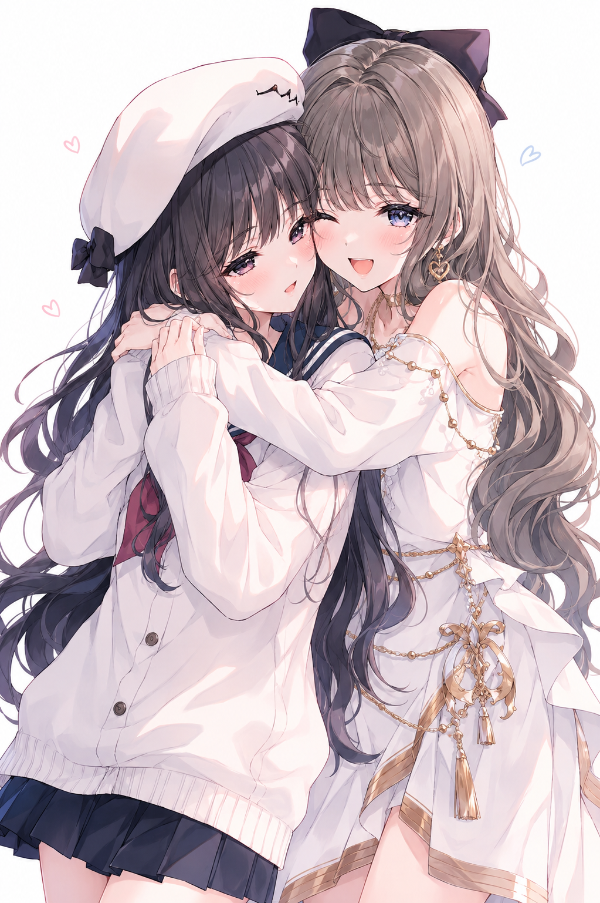

← Archive
0013
Positive Prompt
(masterpiece), (best quality), (ultra detailed), highly detailed anime illustration, two cute anime girls hugging each other, cheerful friendship atmosphere, soft blush, glossy pastel eyes, playful expression, one girl winking, delicate feminine faces, soft flowing hair strands, cute earrings, relaxed daily outfit, affectionate hug pose, youthful energy, candid best friend moment, soft feminine body proportions, minimal clean white background, pastel aesthetic, airy composition, light emotional atmosphere, dreamy slice-of-life mood, soft pink and blue color harmony, subtle lighting, gentle highlights, soft anime rendering, watercolor-like shading, pastel gradients, thin clean lineart, smooth highlights, expressive linework, polished illustration quality, soft cel shading, highly rendered eyes, pixiv featured artwork, modern anime aesthetic, Japanese illustrator style, Korean webtoon vibe, cute manga illustration style, vtuber fanart aesthetic, light novel illustration, trending on pixiv, artstation quality
Negative Prompt
negative prompt: (low quality, blurry, bad anatomy, extra fingers, extra limbs, malformed hands, duplicated features, rough sketch, messy composition, watermark, logo, text, jpeg artifacts, realistic photo, 3d rendering, lowres, cropped)
Positive Prompt (masterpiece), (best quality), (ultra detailed), highly detailed anime illustration, two cute anime girls hugging each other, cheerful friendship atmosphere, soft blush, glossy pastel eyes, playful expression, one girl winking, delicate feminine faces, soft flowing hair strands, cute earrings, relaxed daily outfit, affectionate hug pose, youthful energy, candid best friend moment, soft feminine body proportions, minimal clean white background, pastel aesthetic, airy composition, light emotional atmosphere, dreamy slice-of-life mood, soft pink and blue color harmony, subtle lighting, gentle highlights, soft anime rendering, watercolor-like shading, pastel gradients, thin clean lineart, smooth highlights, expressive linework, polished illustration quality, soft cel shading, highly rendered eyes, pixiv featured artwork, modern anime aesthetic, Japanese illustrator style, Korean webtoon vibe, cute manga illustration style, vtuber fanart aesthetic, light novel illustration, trending on pixiv, artstation quality Negative Prompt negative prompt: (low quality, blurry, bad anatomy, extra fingers, extra limbs, malformed hands, duplicated features, rough sketch, messy composition, watermark, logo, text, jpeg artifacts, realistic photo, 3d rendering, lowres, cropped)